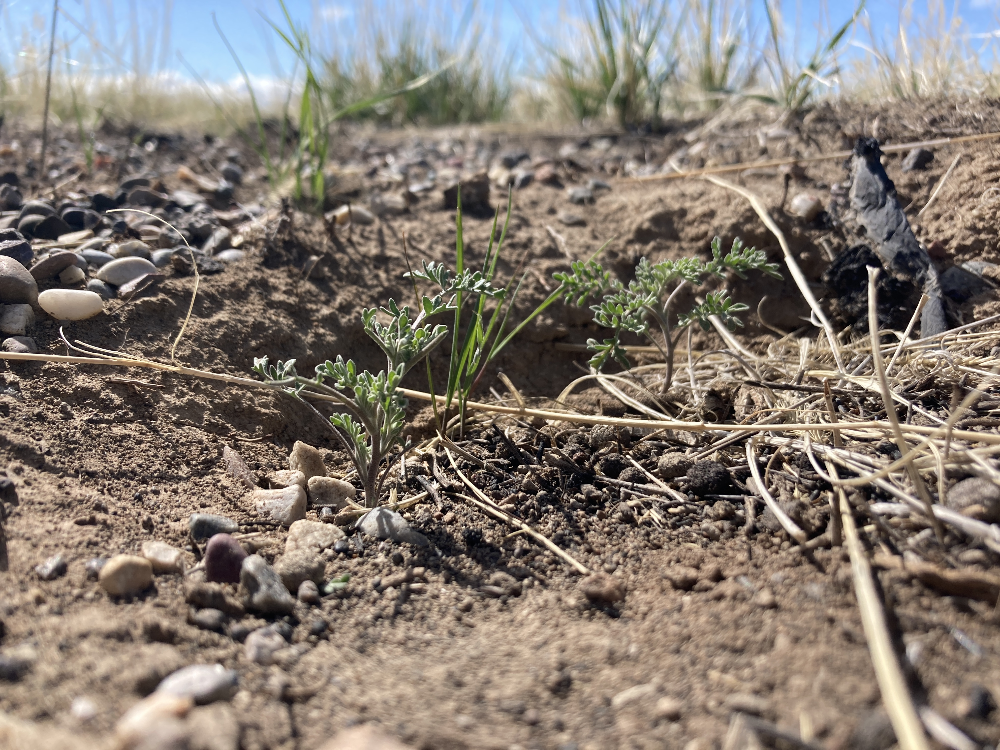

Current Projects
Impact of diversity in the pool of exotic species invading rangelands: response of soil resources, productivity and restoration potential.
Native sagebrush steppe restoration planting and a sensor array in the Boise River Wildlife Management Area, November, 2021 
Widespread invasion by exotic plants is a fundamental threat to the ecosystem functions provided by semiarid rangelands. While invasive species may occur as a dominant monoculture, many plant communities are affected by a diverse array of exotic plants across functional groups, which may differ in the ways in which they alter the soil environment, leaving behind “legacies” in soil environments that persist beyond these species’ removal in restoration efforts. Yet, the diversity of these invaders is rarely considered in the deployment of restoration efforts. We hypothesize that diversely invaded sites (i.e., containing high diversity of exotic species) may be impacted by a greater number of possible soil legacies that encourage these communities to return to a degraded, invaded state, exhibiting high “resilience” to our restoration efforts. To address this knowledge gap, we will employ an integrative field experiment to quantify restoration success across a gradient of invasive plant diversity, monitor the soil legacies left by pre-restoration invaders (including nitrogen and water cycling), and test possible management solutions to limit invaders’ legacy effects on soil health. The proposed work will: 1) explore how the composition of invaded communities influences the severity and diversity of legacies left by invasive species on soil conditions; 2) advance understanding of how these legacies influence whether communities are reinvaded; and 3) test a series of promising soil nitrogen and water management strategies to promote both healthy soils and recovery of native species, with clear application to ongoing restoration efforts across the Great Basin region.
Assessing the impacts of cheatgrass invasions on soil carbon storage and stabilization in sagebrush steppe rangelands.
Cheatgrass growing at the base of a recently burned sagebrush, June 2022.

Invasive annual grasses are now present across millions of acres of the Great Basin. Positive feedback loops such as the notorious Invasive Grass-Fire Cycle support both their spread and dominance. A shift to annual grass dominated rangelands is not only detrimental to native plants, wildlife, and ranchers, but also represents a shift in the dominant plant functional group across many post-fire sites in the Great Basin. Despite obvious differences in phenology, aboveground productivity, and root architecture, there is not a clear consensus regarding the effect of invasive annual grasses on ecosystem carbon storage. This study will address this uncertainty by measuring soil carbon across rangelands in the Western United States in side-by-side plots of relatively uninvaded and highly invaded areas that have not burned in a wildfire for at least 20 years.
Bromecast: Manipulating micro-climate to quantify the impacts of climate change on Cheatgrass and improve prediction of its fitness in sagebrush steppe rangelands across the Western United States
Setting up maniuplative plots, October 2021

I am the lead senior personnel for the Boise arm of an NSF funded collaborative project studying genotype X environment interactions of Bromus tectorum L. (Cheatgrass) in rangelands across the Western United States. This project seeks to provide tools for land managers to adapt to the impacts of climate change on Cheatgrass growth and spread. The project will assess the role of sub-specific adaptation of cheatgrass plants in determining survival, fecundity, demography, and phenology using a common garden approach with overlayed climate manipulations across multiple sites. I played a significant role in establishing the experimental design, developed a new method for climate manipulations in the field, generated monitoring protocols for cheatgrass demographics and phenology, installed the experiment, and will soon submit a paper presenting data from a pilot study to establish the methodology. In addition, I am coordinating an effort to measure leaf relevant traits for a subset of plants across the common gardens. Together these data will improve our empirical understanding of cheatgrass survival, growth, and reproduction under current and projected climate conditions across Great Basin and Shortgrass Steppe rangelands, improving forecasting of cheatgrass spread, which will inform land managers of expected shifts in landscape scale resistance to cheatgrass invasion.
Opportunistic use of a naturally burned climate-manipulation study to test abiotic drivers of resistance and resilience of sagebrush-steppe landscapes
Invasive mustard after a wildfire

I am co-PI and the lead researcher on a project located on the eastern snake river plain in the at the Idaho National Laboratory, where I am studying post-fire plant community dynamics at a long term (~30 year) ecohydrology experiment that burned in a natural mega-fire in 2019. Experimental plots were established in 1993 where the plant community (sagebrush steppe grassland or shrubland), hydroclimate, and soil type were manipulated. By using pre-fire vegetation surveys to predict post-fire plant community and associated soil nitrogen and water dynamics, we are building a conceptual model to improve understanding of the role of fire in driving state transitions in sagebrush steppe rangelands. Preliminary results show strong influences of both plant community and hydroclimate on resistance to cheatgrass invasion and resilience of native vegetation after the wildfire. Analyses are underway to identify thresholds in pre-fire perennial grass and shrub cover that influence post-fire soil nitrogen availability and resistance to cheatgrass. These thresholds would inform rangeland managers of ideal targets for cover of shrubs and bunchgrasses that would confer resistance and resilience to ecosystems with increasing frequency of wildfires.